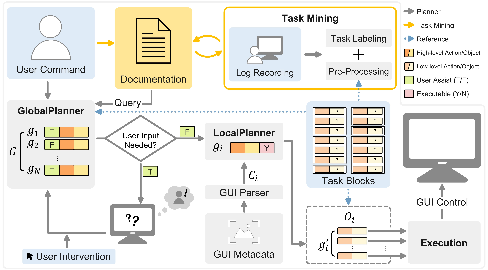

Abstract
GUI task automation streamlines repetitive tasks, but existing LLM or VLM-based planner-executor agents suffer from brittle generalization, high latency, and limited long-horizon coherence. Their reliance on single-shot reasoning or static plans makes them fragile under UI changes or complex tasks. Log2Plan addresses these limitations by combining a structured two-level planning framework with a task mining approach over user behavior logs, enabling robust and adaptable GUI automation. Log2Plan constructs high-level plans by mapping user commands to a structured task dictionary, enabling consistent and generalizable automation. To support personalization and reuse, it employs a task mining approach from user behavior logs that identifies user-specific patterns. These high-level plans are then grounded into low-level action sequences by interpreting real-time GUI context, ensuring robust execution across varying interfaces. We evaluated Log2Plan on 200 real-world tasks, demonstrating significant improvements in task success rate and execution time. Notably, it maintains over 60.0\% success rate even on long-horizon task sequences, highlighting its robustness in complex, multi-step workflows.
Project Video
System Overview
Log2Plan turns raw GUI interaction logs into reusable task abstractions and skills, then synthesizes high-level plans to automate multi-step computer tasks. A task-mining stage segments and clusters logs, a planner composes learned skills with global/local search, and an online adaptor refines execution from feedback in real time. The result is robust, transferable automation that generalizes across apps and domains, outperforming brittle macros or single-demo approaches on realistic workflows.
Overview of the proposed method : The Agent identify and label Tasks from collected log data. The user command is decomposed into a sequence of event-level tasks. Then, the LocalPlanner generates a task block-level plan, which corresponds to the event, optimized for the current GUI environment. Subsequently, the Execution phase carries out the low-level control.

Domain distributions of user logs (left) and testcases (right). Inner rings indicate the proportion of source types: Web, Local, App, and Crossover; outer rings show domain-level breakdowns. Domains shared across both sets are shown in gray.
Log2Plan's Three-Principle Approach to Complex Task Automation. The system retrieves and combines patterns from multiple logged sessions using frequency-based extraction (red), similarity-based adaptation (green), and context-aware logical reasoning (blue) to execute a sophisticated multi-application workflow. The central combination box shows how these principles enable novel task synthesis that exceeds any individual logged interaction.
Citation
Seoyoung Lee, Seobin Yoon, Seongbeen Lee, Hyesoo Kim, Joo Yong Sim. Log2Plan: An Adaptive GUI Automation Framework Integrated with Task Mining Approach. In UIST '25: Proceedings of the ACM Symposium on User Interface Software and Technology, 2025. ACM. DOI: 10.1145/3746059.3747663.
@inproceedings{Log2Plan2025,
author = {Seoyoung Lee and Seobin Yoon and Seongbeen Lee and Hyesoo Kim and Joo Yong Sim},
title = {Log2Plan: An Adaptive GUI Automation Framework Integrated with Task Mining Approach},
booktitle = {Proceedings of the ACM Symposium on User Interface Software and Technology (UIST '25)},
year = {2025},
publisher = {Association for Computing Machinery},
doi = {10.1145/3746059.3747663},
url = {https://dl.acm.org/doi/10.1145/3746059.3747663},
eprint = {https://arxiv.org/abs/2509.22137}
}